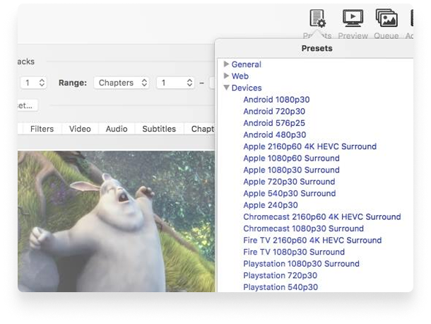
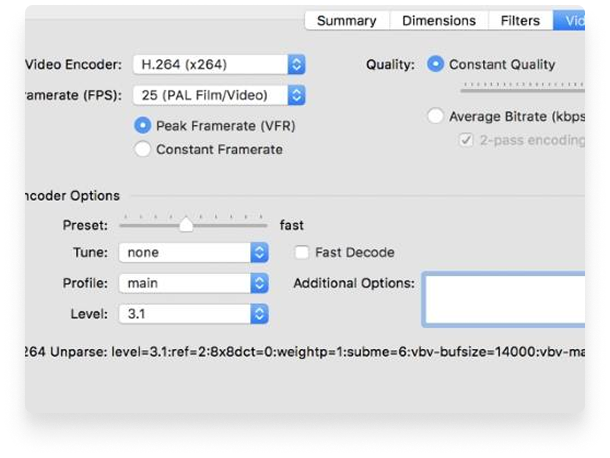
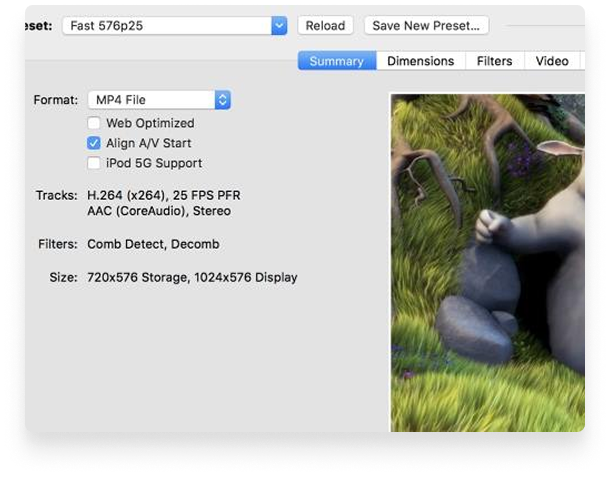

Convert video from nearly any format
Convert video from nearly any format
Convert video from nearly any format
Just a few reason you
will love HandBrake


Optimised for easy use
Built-in Device Presets
Get started with HandBrake in seconds by choosing a profile
optimised for your device, or choose a universal profile for
standard or high quality conversions. Simple, easy, fast. For
those that want more choice, tweak many basic and advanced
options to improve your encodes.
Modern video formats
Supported Input Sources
Handbrake can process most common multimedia files and any DVD or BluRay sources that do not contain any kind of copy protection.
Outputs
 File Containers: .MP4(.M4V) and .MKV
Video Encoders: H.265 (x265 and QuickSync), H.264(x264 and
QuickSync), H.265 MPEG-4 and MPEG-2, VP8, VP9 and
Theora
Audio Encoders: AAC / HE-AAC, MP3, Flac, AC3, or
Vorbis
Audio Pass-thru: AC-3, E-AC3, DTS, DTS-HD, TrueHD, AAC and
tracks
File Containers: .MP4(.M4V) and .MKV
Video Encoders: H.265 (x265 and QuickSync), H.264(x264 and
QuickSync), H.265 MPEG-4 and MPEG-2, VP8, VP9 and
Theora
Audio Encoders: AAC / HE-AAC, MP3, Flac, AC3, or
Vorbis
Audio Pass-thru: AC-3, E-AC3, DTS, DTS-HD, TrueHD, AAC and
tracks


With you in mind
Even more features for you
Title / chapter and range selection
Batch Scan and Queueing of encodes
Live Static and Video Preview
Support for VFR and CFR
Chapter Markers
Constant Quality or Average Bitrate Video Encoding
Video Filters: Deinterlacing, Decomb, Denoise, Detelecine,
Deblock, Grayscale, Cropping and scaling